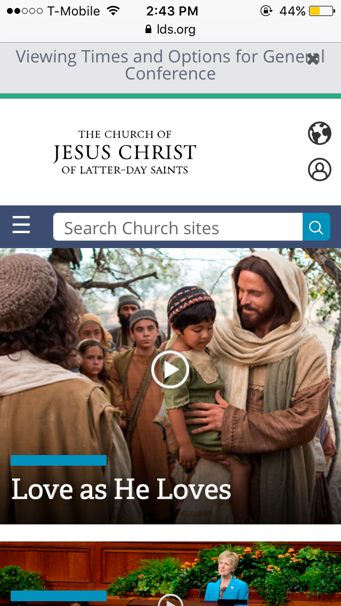
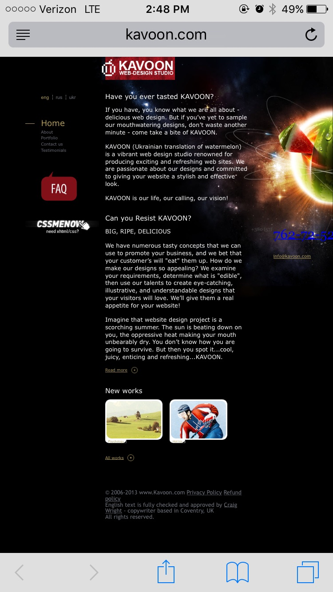
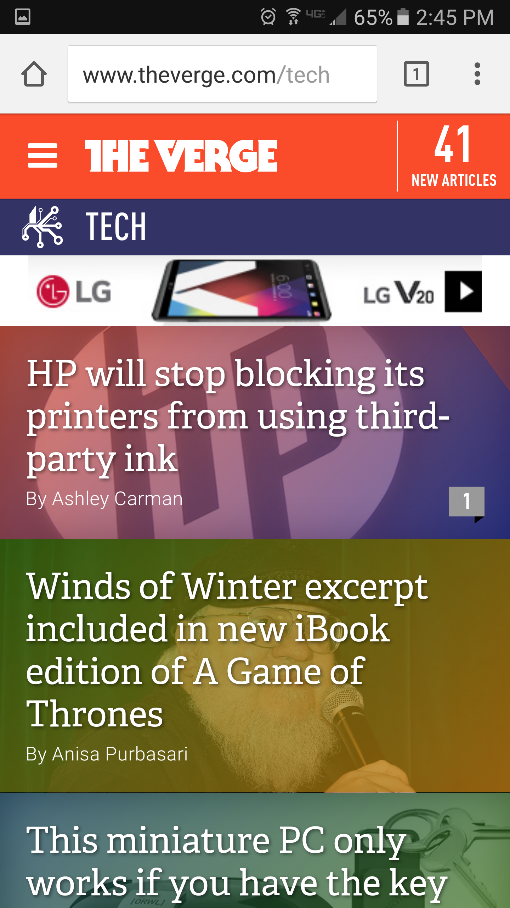
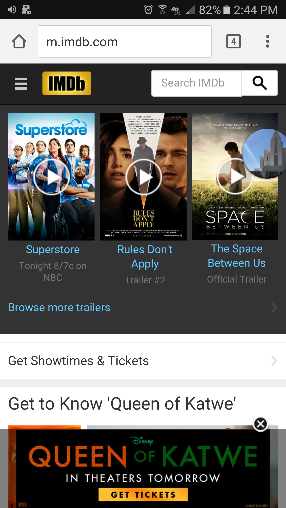
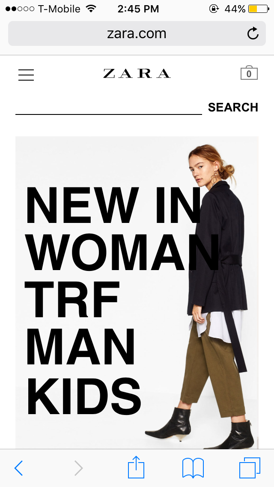

Design Principles in Mobile Sites
Proximity — Alan Alberro
lds.org
The Church of Jesus Christ of Latter-Day Saints website utilizes proximity extremely well. Sections are spaced off and everything appears to have it's own space. White space is utilized as well in order to add breathing room throughout the page.
Alignment — Justin Barnes
kavoon.com
On Kavoon.com they do a great job of using alignment. All of the text is left aligned, which makes it very easy to read. The logo is at the top and the nav bar is on the left of the text making it very easy to navigate.
Repetition — David Linzey
theverge.com
The Verge uses a lot of repetition. The banner on top is on every page. Bellow the banner it identifies which page topic is being viewed. Bellow that are colorful story titles. Each page including the home page is designed the same way.
Contrast — Eric Keller
imdb.com
This website is an excellent example of contrast. Right when the website opens, the attention is immediately drawn to the banner of recent movies and trailers. The grey background makes a great look to the usual white. And with the iconic yellow logo of IMDB and the blue text, it makes it visually appealing as well.
Typography — Alan Alberro
Zara.com
Zara is a clothing company from Spain which is known to be bold yet simple. The typography used throughout the website matches the style of the company. This makes it easier for the consumer to relate to the website and find what they like.